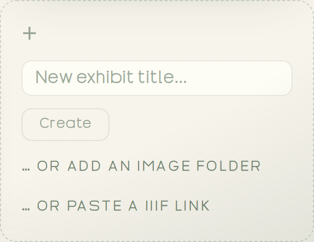

The obvious way is slow: make an empty exhibit, then add files one by one. Two faster onramps you'd never guess from looking — start with those.
Plain and quick. Switch to Advanced for the standards & citation depth.Scholar mode: where the media comes from and how it stays citable. Back to Simple any time.
1. Three ways to start an exhibit
An Exhibit needs media. Three onramps fill it — and the two you can't see coming save the most time.
Blank title Image folder IIIF link
→
Your Exhibitmedia in, in order

All three live in one tile — the dashed "+" card on the Studio Library home (real screenshot).
Type a title → CreateThe obvious one. Starts an empty exhibit; you add media as you go.
… or add an image foldereasy to missPoint at a folder and every image becomes an Object, kept in the folder's order. One gesture builds the whole exhibit.
… or paste a IIIF linkeasy to missPaste a IIIF manifest URL from a library or museum — its images flow straight in, already captioned.
For the standards-minded
The IIIF onramp bootstraps from any institutional manifest — tens of thousands are published by libraries and museums, so you can annotate a source collection without downloading a thing. A folder import keeps each file's original name as provenance, so your Objects stay citable back to source.
Already have one?
To reopen work from another machine, use Open a library… (top of the home) or pick it from Recent libraries. Where that saved file lives — and how not to lose it — is the next step.
Your first move
In Studio, find the dashed "+" tile and choose "… or add an image folder." Pick any folder of images and watch a whole Exhibit appear — each image already an Object, in order. (Got a IIIF link from a collection? Paste that instead.)
I'm your guide. Want me to point to exactly where an onramp lives, or what a IIIF link looks like? Just ask.